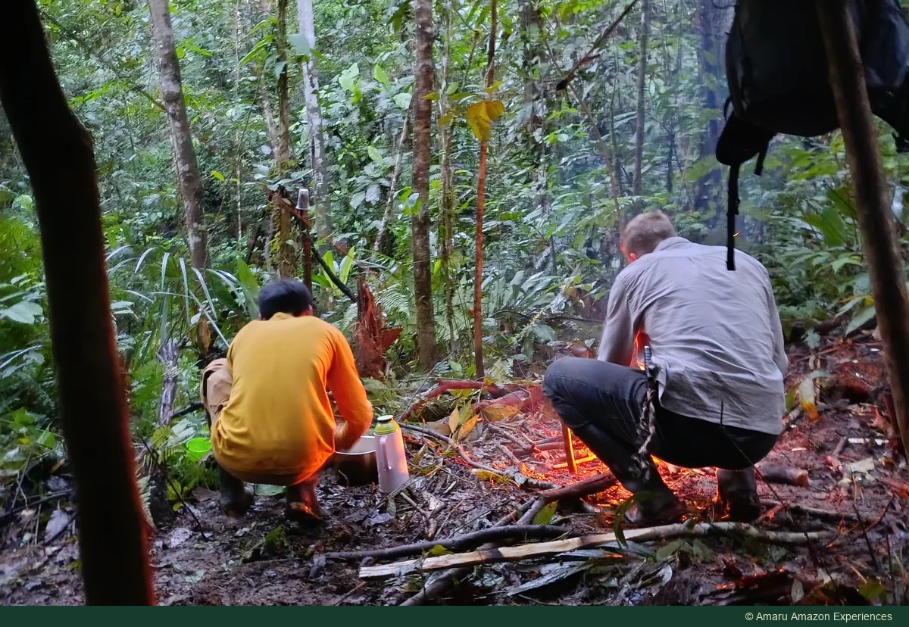

Puerto Nariño · Colombian Amazon
A night in the Amazon rainforest
Stay for the sounds, the stories and the feeling of waking up somewhere different.
Ask Amaru on WhatsApp ↗
About this experience
Stay beyond the evening walk and spend a night in the rainforest in a hammock with a mosquito net. This is a demanding immersion: walking over uneven, damp ground with basic luggage, adapting to darkness, insects and the absence of conventional comforts. Prepare the sleeping place, meals, water, equipment and return with Amaru before confirming your personalised proposal.
Staying until morning gives you time to experience the forest’s changing atmosphere: the evening sounds, the hours of darkness and the return of daylight. In the Colombian Amazon, warmth and humidity are part of preparing for that experience. An overnight stay invites a different rhythm from a walk followed by a return to your accommodation.
Your comfort is part of choosing a forest night. Accommodation around Puerto Nariño takes different forms, so the words ‘a night in the rainforest’ should begin a conversation about the exact place and sleeping arrangements. Explain what matters to you, from rest and privacy to walking effort, before agreeing an itinerary with Amaru.
Destination context sources: Colombia Travel ↗ · Parques Nacionales ↗
What to explore
- Overnight forest immersion
- Walking and camp arrangements tailored together
- Equipment, meals and inclusions to confirm with Amaru
Before you go
- Time of day
- OVERNIGHT
- Duration
- Confirm the duration and meeting point with Amaru for your dates.
- Physical effort
- High effort
Levels are indicative. Terrain, water levels, weather and your group can change the demands of an outing.
Plan for prolonged walking over wet, uneven ground and carrying basic luggage. Sleeping in a hammock with a mosquito net requires adapting to a simple forest setting. Confirm meals, drinking water, toilets, supplied gear, baggage limits and bad-weather arrangements. Request a packing list for your actual proposal.
What should I confirm?
Ask about the route, departure, group requirements, guide language, equipment, transport and what is included. Share your dates and number of travellers, and review the full price and cancellation conditions before confirming anything.
Routes depend on water levels, weather and local conditions. Wildlife sightings cannot be guaranteed.
AMARU AMAZON EXPERIENCES
Experiences from our travellers
Travelled with Amaru? Share your experience to help other travellers.
Write a review
We review every opinion before publication. Legitimate criticism is welcome; we never change the text or stars.
Copy the ID and code before closing or reloading this page.
Web submissions are not available yet. You can contact Amaru by email. Contact by email ↗
Delete my review
Contact by email ↗AMARU AMAZON EXPERIENCES
Plan this experience
Choose this experience on its own or discuss it as part of your Amazon journey. An enquiry does not confirm a booking, and this website does not take payments.
Ask Amaru on WhatsApp ↗